Madeleine Teh is an independent graphic designer based in tropical Manila, Philippines, who creates for clients in the arts, culture, and lifestyle sectors.
Branding + Illustration
Web Design + Social Media
Currently Freelancing
Schooled @ RISD Graphic Design 2020
full client list + professional portfolio available upon request
Email
Instagram
LinkedIn
Projects
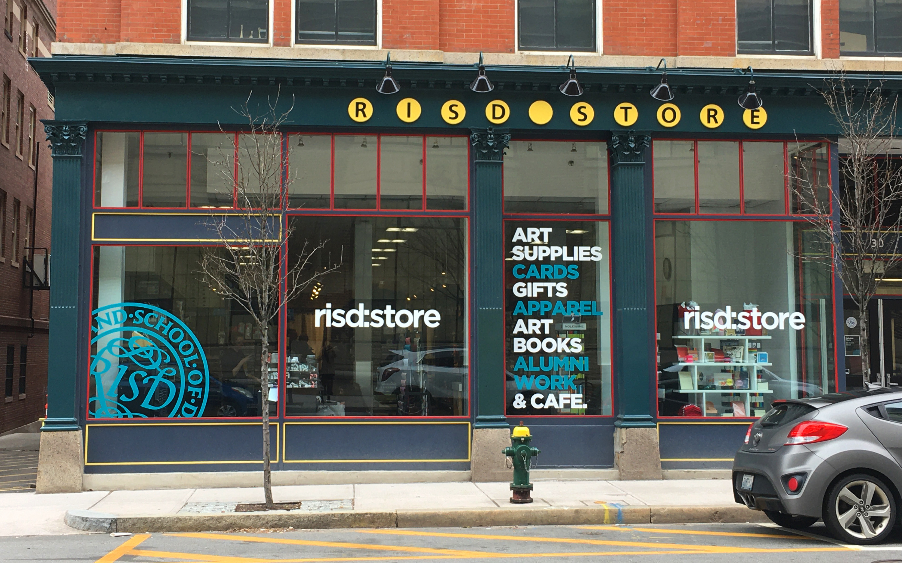
RISD Interim Identity | Branding
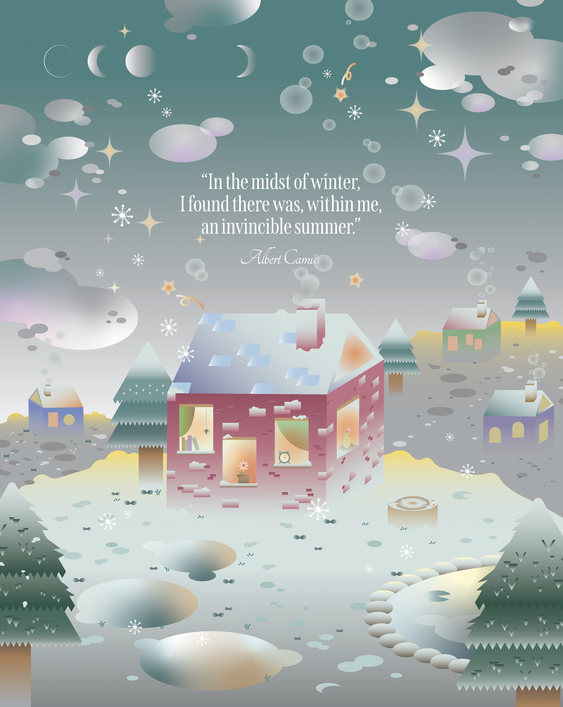
Winter | Poster, Illustration
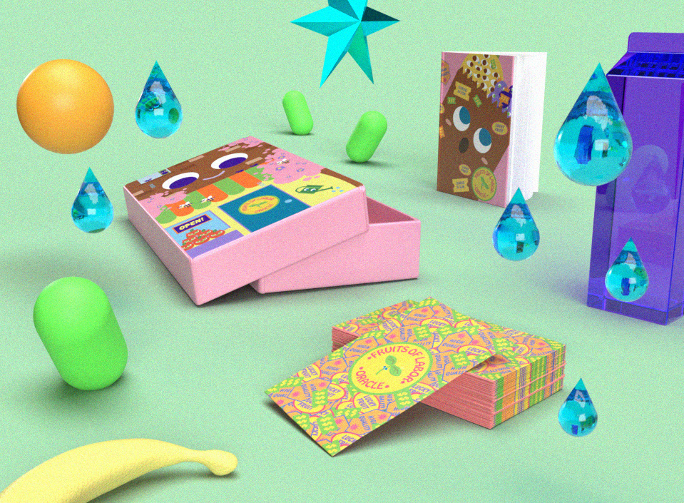

Fall Speaker Series 2019 | Branding, Poster
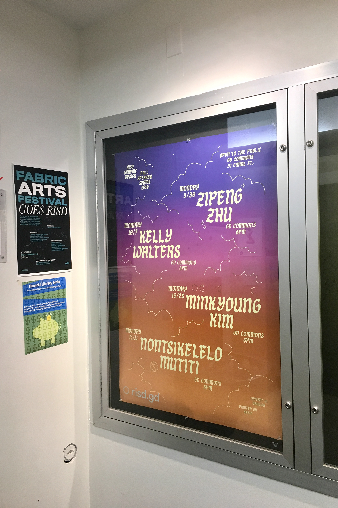
Fall Speaker Series 2019 | Branding, Poster
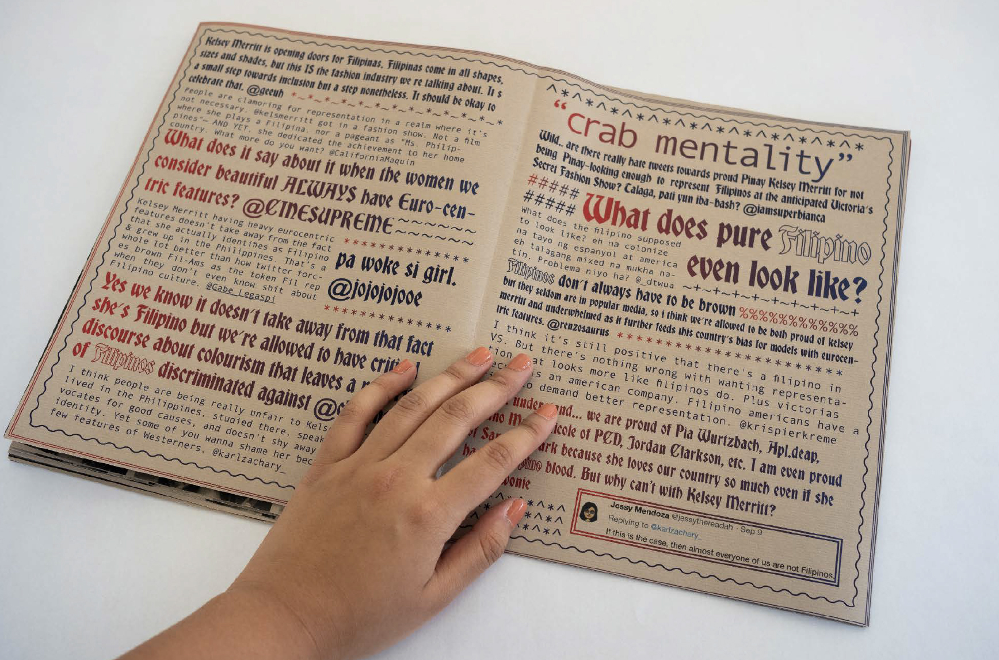
Tiis Ganda | Publication
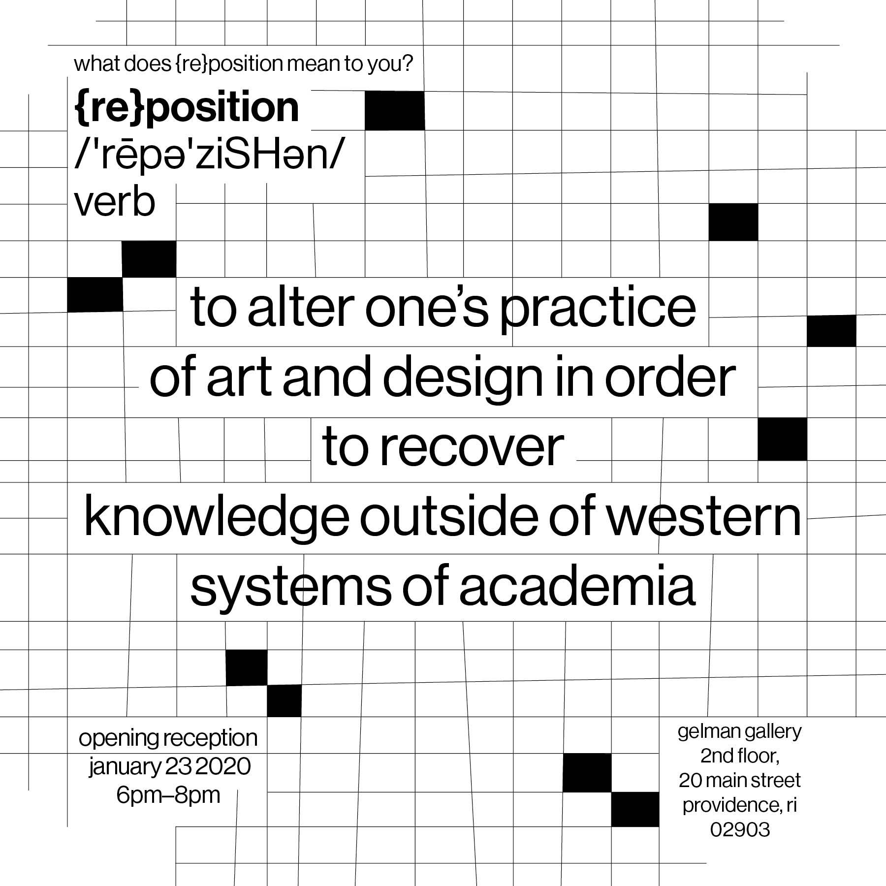
{re}position @ RISD Museum | Branding, Posters, Animation
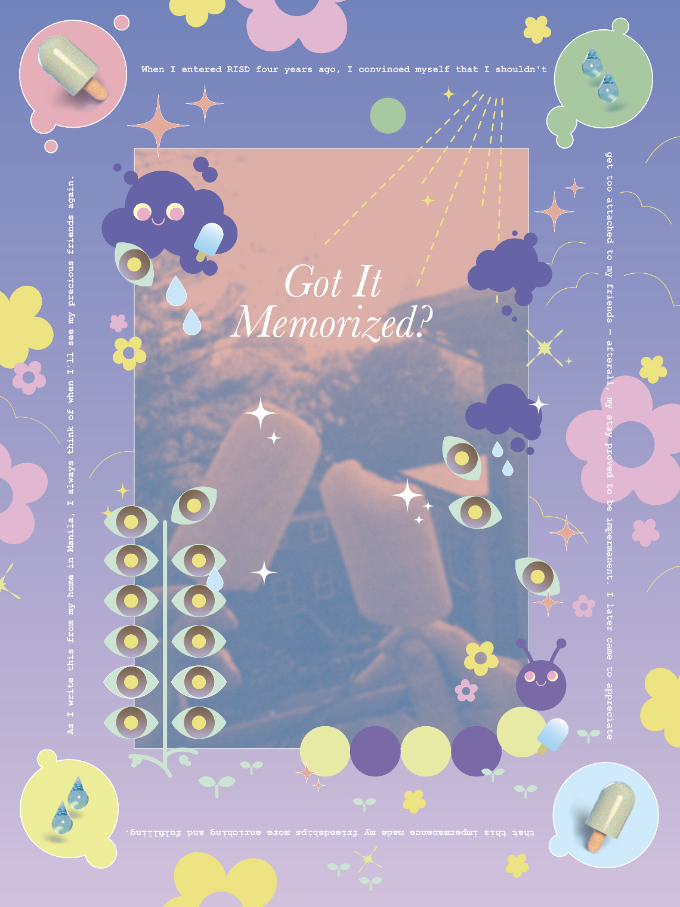
Got It Memorized (Kingdom Hearts) | Poster
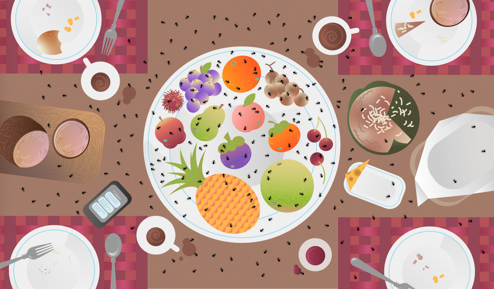
So! Many! Ants! | Comic (selected image)

Solomon by Munimuni | Poster
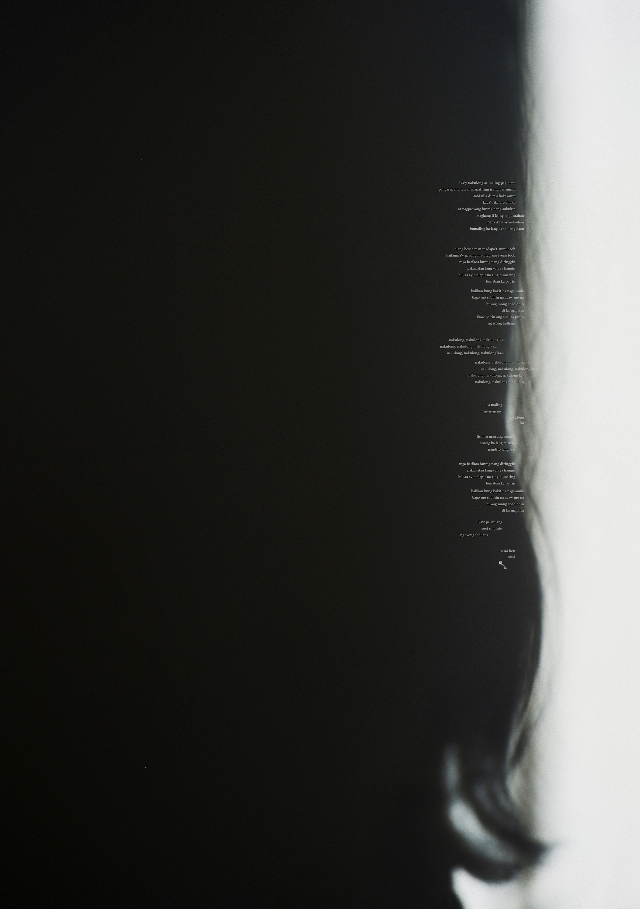
Susi by Ben&Ben | Poster

Jhumpa Lahiri "Interpreter of Maladies" | Speculative Cover Redesign

Jhumpa Lahiri "The Namesake" | Speculative Cover Redesign

Jhumpa Lahiri "Unaccustomed Earth" | Speculative Cover Redesign

Jhumpa Lahiri "The Lowland" | Speculative Cover Redesign
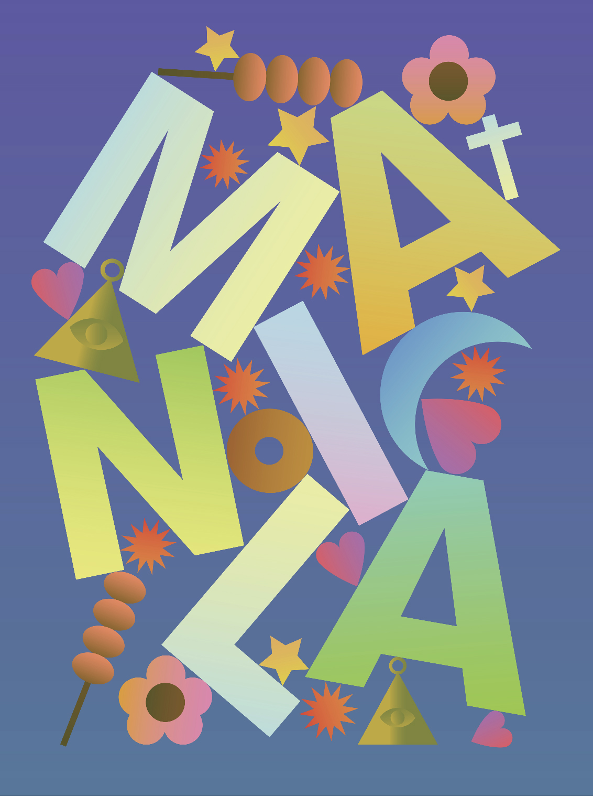
Manila | Poster, Illustration
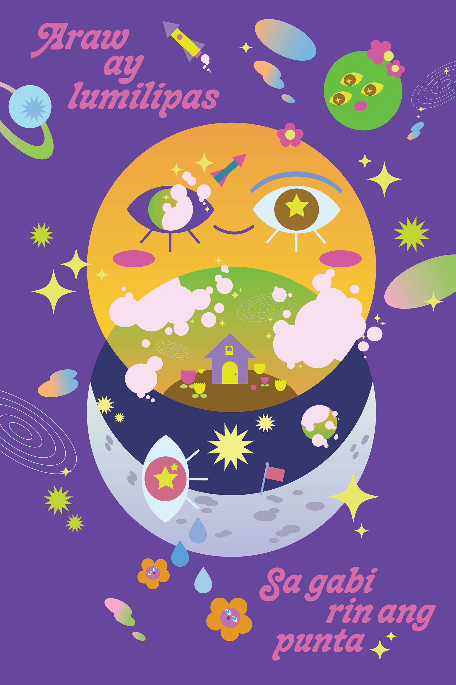
Sun + Moon | Poster, Illustration
full client list + professional portfolio available upon request
last update: oct. 5. 2020
madeleine teh © 2020